東京大学 2016年 理科 第6問
問題
座標空間内を、長さ2の線分ABが次の2条件(a), (b)をみたしながら動く。
(a) 点Aは平面z=0上にある。
(b) 点C(0,0,1)が線分AB上にある。
このとき、線分ABが通過することのできる範囲をKとする。Kと不等式z≥1の表す範囲との共通部分の体積を求めよ。
解答
z軸について対称なので、点Aを通ってz軸と垂直な方向にr軸をとり、r z平面において考える。
点Aが含まれる側をr軸の正とする。
r z平面上での点Aの座標を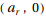、点Bの座標を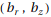とする。
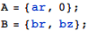
点C(0,1)が線分AB上にあって線分ABの長さが2だから、
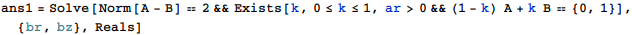
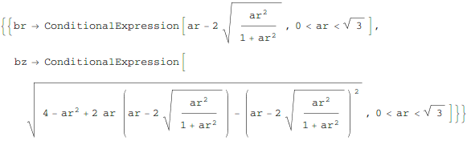
以降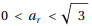として、
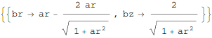
線分ABが通過する領域Kのr z平面での断面は
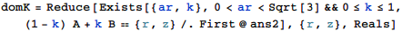
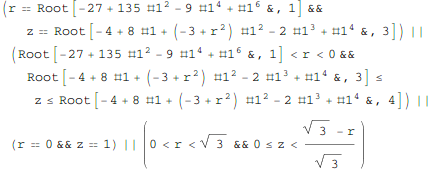
これを図示すると下図。
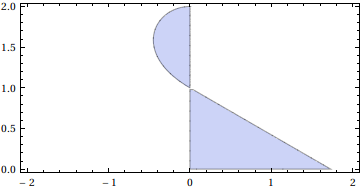
Kとz≥1との共通部分は
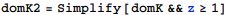
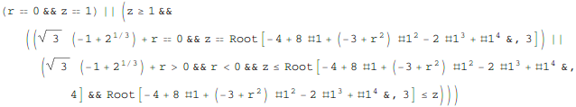
zについて解かれているのをrについて解き直して、
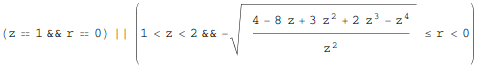
求める体積はこれをz軸について回転させたものだから、
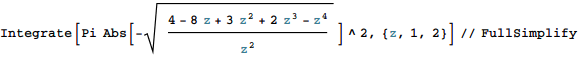
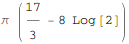
補足・感想
3次元座標のままゴリ押しで計算しようとしたが、Reduceの計算が終了しなかった。
2次元に落としたあとも、逐次文字を消去してReduceに与える必要があった。